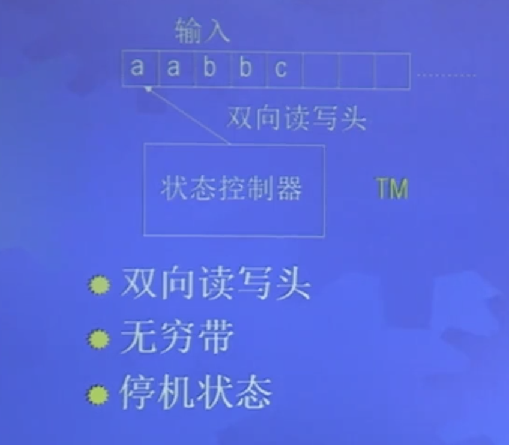

单带图灵机
定义4.1：TM M=(Q,Σ,Γ,δ,q0,qacc,qrej)
- Q：有穷状态集
- Σ 输入字母表
- Γ，带字母表 Γ∪{B}⊆Γ
- δ:Q×Γ→Q×Γ×{L,R}，根据当前状态，当前所读符号决定下一状态和当前符号要替换成什么符号和指针方向。

格局：uqav
- 当前状态：q
- 当前带内容：uav
- 当前扫描符号：a
格局的产生：C1→C2
- 如果 δ(qi,b)=(qj,c,L)，则 uaqibv→uqjacv，qibv→qjcv
- 如果 δ(qi,b)=(qj,c,L)，
则 uaqibv→uacqjv
M 的语言：L(M)={x∣M accepts x}
图灵可识别：A=L(M)
- x∈A，M 在 x 上停机接受
- x∉A，M 在 x 上停机拒绝或不接受
图灵可判定：A=L(M)
- x∈A，M 在 x 上停机接受
- x∉A，M 在 x 上停机拒绝
等价术语：可计算=可判定=递归 / 半可计算=可识别=递归可枚举
TM 等价变形
TM 概念有很强的稳健性
多带图灵机
δ:Q×Γk→Q×Γk×{L,R}k
定理4.8：每个多带 TM 都有等价的单带 TM
思路：分道：每道模拟一条带；分段：每段模拟一条带
推论4.9：图灵可识别当且仅当可用多带图灵机识别
非确定图灵机
δ:Q×Γ→P(Q×Γ×{L,R,S})
定理4.10：每个 NTM 都有等价的 DTM
思路：广度优先遍历避免不停机
推论4.11：图灵可识别当且仅当可用非确定图灵机识别
推论4.12：图灵可判定当且仅当可用非确定图灵机判定
枚举器和识别器
枚举器：输入 ϵ，输出 x1,x2,x3...。无遗漏、无多余可重复、无顺序
定理4.13：图灵可识别等价于可枚举
思路：
- 可识别即可枚举：枚举所有串逐个识别得到枚举器
- 可枚举即可识别：进行枚举等待与输入串相同的串 x 出现
算法：处处停机的图灵机
递归定理
引理7.1：存在可计算函数 q:Σ∗→Σ∗，对于任意 w，q(w) 是图灵机 Pw 的描述，TM Pw 打印 w 然后停机。
- q(w)=<Pw>
- Pw(x)=w
- 对于任何 w, Pw 都存在
- w 得到 <Pw> 的过程是可计算的
自我复制机：SELF(x)=<SELF>
思路：分为两部分，<SELF>=<AB>，A 打印 <B>，B 对于输入 <M> 打印 q(<M>),<M>，最终得到 <AB>。
定理7.2( 递归定理 )：设 TM T 计算函数 t:Σ∗×Σ∗→Σ∗，存在 TM R 计算函数 r:Σ∗→Σ∗，使得对于任意 w，有 r(w)=t(<R>,w)
思路：<R>=<ABT>
- A: 打印 <BT>
- B: 打印对于输入 w 打印 q(w)
- T: 使用<ABT,w>运行
图灵机接受问题
ATM={<M,w>∣TM M accept w}
引理：ATM 是图灵可识别的
证明：设计图灵机 U 识别 ATM
U=“对于输入 <M,w>
- 在输入 w 上模拟 M
- 如果 M 进入接受状态则接受，如果拒绝则拒绝”
定理7.3：ATM 是不可判定的
证明：反证法，如果存在判定器，可以使用判定器构造一个图灵机产生于判定结果相反的结果，而这样的图灵机不存在，因此判定器不存在。
极小图灵机
定义7.4：等价图灵机中描述最短的图灵机为极小图灵机
定理7.5：MINTM={<M>∣M is mininal} 不是图灵可识别的
证明：假设 TM E 枚举 MINTM
构造 TM C=“对于输入w：
- 得到自己的描述 <C>
- 运行 E 直到得到比 C 更长的 D 出现
- 在 w 上模拟 D
”
由于 E 枚举 D，所以 D 是极小的，但 D 比 C 长，矛盾。
定理7.6：对于任何一个可计算的 t 都存在一个图灵机 F 使得 t(<F>) 与 F 等价
证明：TM F=“
- 得到自己的描述 <F>
- 计算 t(<F>) 得到 G
- 在 w 上模拟 G”